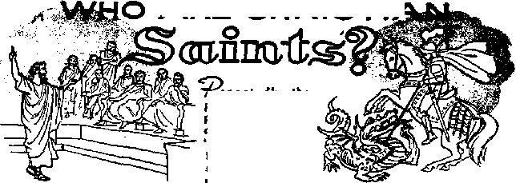
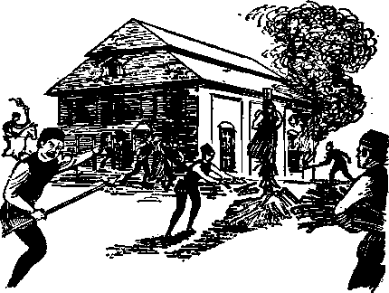

WHO ARE CHRISTIAN SAINTS?
Hollywood’s Version o£ "The Ten Commandments”
Constitutional Freedom in Italy
Exercise Can Keep Your Weight Down

THE MISSION OF THIS JOURNAL
Newt sources that are able to keep you awake to the vital issues of our times must be unfettered by censorship and selfish interests. “Awake!” has no fetters. It recognizes facts, faces facts, is free to publish facts. It is not bound By political ambitions or obligations; it is unhampered by advertisers whose toes must not be trodden on; it is unprejudiced by traditional creeds. This journal keeps itself free that it may speak freely to you. But it does not abuse its freedom. It maintains integrity to truth.
"Awake 1” uses the regular news channels, but is not dependent on them. Its own correspondents are on all continents, in scores of nations. Froih the four corners of the earth their uncensored, on-the-scenes reports come to you through these columns. This journal's viewpoint is not narrow, but is international. It is read in many nations, in many languages, by persons of all ages. Through its pages many fields of knowledge pass in review—government, commerce, religion, history, geography, science, social conditions, natural wonders—why, its coverage is as broad as the earth and as high as the heavens.
"Awake I” pledges itself to righteous principles, to exposing hidden foes and subtle dangers, to championing freedom for all, to comforting mourners and strengthening those disheartened by the failures of a delinquent world, redacting sure hope for the establishment of a righteous New World, .
Get acquainted with “Awake!” Keep awake by reading "Awake!"
PtiBLtsiiKD Semimonthly By
WATCHTOWER BIBLE AND TRACT SOCIETY OF NEW YORK, INC.
117 Adams Street, Brooklyn 1, New York, U. S. A.
N. H. Knorr. President Grant Suiter, Secretary
Printing this Issue; 2,000,000 Five cents a copy
OiMr faniHpM in whlrt "AwiM!" Ii *it>IUhed: Simimonthly—Afriiainn, Finntah, Fnntah, German, Hollandlah, Italian. Norwegian, Spanish, Swedish. Mtithty—Danish, Greek, Japanese, Portuguese,. Ufa-alulae.
Yearly subscription rstcn Oflm for Femi monthly edition^
Amerfa, U.S.. 117 Atiataa St., Broaklyn 1. N.Y. (I Australia, JI Rd,( fltrathfield, N.S.W, 8/’
Ganait, 150 Brldgelsud Are,, Part ftasd P.0u
England, 34 Crites Terrace, London W. 2
Knr Zealand, <LP.O. Bw 30. Wrillnfftt®. C, 1
Sfffr AfrlM, Private Efartrfufottlefn, FrL
Manthiy edltlane co&t half the above rater
Remittances should he sent to cfTlce in your country la compliance Flth regulations to guiracU* safe delivery of money. Remittance* ire accepted a: Brooklyn from countries, where no office 1» located, by inl^rnaiJonal money order only. Subscription rates jn different countries are here slated In local currency. Notice of explratlift (with renewal blank! 19 sent at least two tatH* before subscription expires. Cha DM of ad drew when sent to our office may be expected effective within one month. Send your old u well as new address .
Entered w jwrofid-rjajs matter at Brooklyn, N. T.
Printed in U.S.A,
CONTENTS
Scientists Balk at Facing Facts
Sauerkraut a Chinese Invention
Civilized Men Along with Cave Men 8 Hollywood’s Version of “The Ten
Establishing Constitutional
Jewish Persecutions in Medieval Times 16
Exercise Can Keep Your Weight Down
“Your Word Is Truth” The Darkness That Covers the Earth 25
Jehovah’s Witnesses Preach in All
SCIENTISTS BALK T
AT FACING | FACTS |
II It IS claimed that "absolute honesty of LBj mind and love of truth” are the basis
of true science. However, not all who claim \methods. In either case there is here a challenge whether it be to physiology, sta-
to be scientists are as objective as that claim would have us believe. Sometimes bias or preconceived ideas prevent scientists from exercising a love for the truth. It makes them balk at facing the facts. A case in point is the attitude many scientists take regarding the evidence presented by ESP.
What is ESP, you ask? ESP stands fbr “extrasensory perception” and refers to mental telepathy and all other forms of transferring thoughts from one person to another without the use of a physical medium, apart from the senses. Included in ESP is also the seeming influence of mind over matter, as when one D.D. Home of the last century played musical instruments without touching them. A new branch of psychology has come into being that concerns itself with ESP and that is termed parapsychology.
Many scientists balk at the evidence presented by ESP because it does not fit into their understanding of the laws of nature. As Dr. Alan 'Parkes of the ’ilation'A Pn-stitute for Medical Research said: “We are faced either with a major biological discovery or else with the unpalatable conclusion that highly impressive results can arise as artifacts of the use of established tistlcs or psychology.”
Some, such as Dr. Robert A. McConnell of the University of Pittsburgh, are willing even to go to the extreme of discarding the “calculus of probabilities,” or the law of averages, in their determination to discredit the evidence of ESP. Others, such as Prof. George R, Price of the University of Minnesota, are willing to impugn the motives of all those having to do with ESP, charging fraud and trickery, or, at best, tJJ, ss> ws, v/st * v
accept ESP’s testimony.
As reported by science writer Waldemar Kaempfert in the New York Times, July 22, 1956: "Because ESP cannot be explained by a mechanism and because experiments so far favor action at a distance,” thought transference seeming to work just as well many miles apart as in the same room, “which is abhorrent to scientists, they, especially the physicists, ■rejetfi \Yieni. The aWrtufie cfi Tne siiieifiist toward ESP is the same as his attitude
toward the stage magician. The scientist knows that the magician is playing a trick when he pretends to puli rabbits out of a hat or to extract yards and yards of paper from his mouth. The scientist cannot see how the tricks are done, but he is convinced of their fraudulent character.”
In this analogy, however, the scientist is inconsistent on-two counts. First of all, the magician does not insist that he is doing something out of the ordinary, but merely does it for the sake of entertainment. And, secondly, a little investigation will reveal the tricks of the stage magician to be merely optical illusions. But scientists working with ESP are in dead earnest and no one has been able to make the charge oPtrickery or deceit stick.
Yes, “scientists enough have witnessed ESP experiments and seen to it that there was no trickery and no self-deception.” Yet “in most cases they have refused to accept the findings.” Even though “the proceedings of both the British and American Societies of Psychical Research are replete with authentic instances of telepathy and clairvoyance” they balk at accepting ESP as a fact
Arguing for the evidence submitted in behalf of ESP, Kaempfert continues: “The trouble lies in our inadequate knowledge of the mind’s powers. The evidence that Professor Rhine and others before him have accumulated is so formidable that it cannot be rejected because it does not fit into physical science. The truth is that psychology and parapsychology have an immense task to perform.” And further, “There is no question that there are genuine phenomena which are embraced In the designation ESP. What we need is a thorough exploration of the mind’s capabilities.”
Why should scientists balk at the facts presented by ESP? Do they know everything? If not, would it not be wiser for them to seek the explanation rather than balk at the formidable evidence and accuse those who present it of trickery? But pride closes their eyes and makes them blind guides and the common people foolishly accept the testimony of such men in preference to that of the Bible.
Not that ESP does not have an inherent weakness. Scientists insist on a formula or explanation and ability to repeat results before accepting claims made, and this, of course, ESP cannot do. But let it be noted, though, that ESP does not have the explanation the Bible has, which, however, is not accepted by parapsychologists in general, although it is by many associated with psychical research. And what is the explanation? The presence of unseen creatures, spirits. The Bible shows that there are good spirits and bad spirits. It is the bad spirits that communicate with mankind and deceive men by the phenomena associated with ESP. These wicked spirits could certainly account for the evidence seeming to indicate the influence of mind over matter. The lack of uniformity in the results of ESP experiments would further argue that, rather than a power of the mind, capricious, wicked spirits are involved. Those accepting the Bible’s explanation have no occasion for balking at the facts.
This, no doubt, will surprise many Germans. Sauerkraut is a Chinese invention. According to the National Kraut Packers Association kraut originated in China about 300 years before Christ, while the Great Wall was being built. Bands of Tartars took loads of it to Europe, where it became a popular German dish.
/KRE CHRISTM
rCjpeotadiy the prate tells of the pope’s canonizing a deceased person os a ‘'saint." What doos the Bible say about taints? What is God's purpose regarding saints, and what is
WHO are Christian saints? required of them? That question was recently
thrust to the fore by the publication of a review in Time magazine, August 8, 1956, of “four lively and curious volumes of Sutler's Lives of the Saints” in “a brand-new bicentennial edition.” These volumes name 2,565 “saints.” This listing, however, is neither wholly wsr '*!i-
inclusive, no such list having been published.
No doubt what make these volumes curious are the facts regarding some of these “saints.” For example, there was Benedict Labre, “a dirty saint who spent most of his life tramping from shrine to shrine throughout 18th century Europe, sleeping in sheds or fields, eating meagerly of handouts or garbage, talking to virtually no one and smelling to high heaven.” It must also seem curious to many that included in this list of 2,565 saints’ biographies are what Time magazine terms “some of the best stories in Christian tradition though modem scholarship and/or common sense deny them corroboration.” Among such stories is that of "the Seven Sleepers of Ephesus,” who, “sealed up to suffocate in a cave by a persecuting emperor, were placed in miraculous hibernation by the Lord, to emerge 2^% years toter to tireiT own astonishment and the edification of all good
Christians.” Though purely legendary, these seven “saints" are commemorated annually on July 27.
According to the Catholic Encyclopedia (Vol, 2, pp. 364-369) only the pope can decide who -deserves being termed a saint. It further tells that only after a long-drawn-out process involving investigations, special meetings, weighing of evidence, etc., regarding purported miracles and a life of sanctity and heroic virtue is a person eligible for beatification. Those eligible fall into two groups, the “martyrs” and the “confessors," the latter being those who died peaceful deaths. Beatification, or being pronounced, “blessed,” permits veneration or commands it only locally. Farther steps, involving more evidence, must be taken before a person is canonized, by which the pope commands veneration by all Catholics world-wide.
How elaborate the process is by which a person is canonized can be seen in some measure by the expense involved. According to an itemized list published in the Catholic Encyclopedia (1913, latest edition) the cost of canonizing a person is at least $42,816.87. This is to be paid by the patron or patrons interested in having the particular person proclaimed a saint. History records that Henry VI, English king of the fifteenth century, was not made a saint, as was the custom in those days, be-
cause his successor, Henry VII, was unable or unwilling to pay the high cost.
What are the Scriptural qualifications of a saint? Does the Bible authorize the beatification and canonization of persons as saints? Does it command that these be venerated, and encourage us to pray to them for help?
God’s Word nowhere teaches that asceticism or self-torture makes one a saint. On the contrary, it plainly states that “a severe treatment of the body” is of ‘‘no value in combating the satisfying of the flesh.” We are also told to treat our bodies as slaves. One does not abuse or torture a slave but rather takes good care of him so that he can do the best and the most work possible. But at the same time a slave is kept in submission. A master does not do the will of his slave but the slave does the will of his master.—Colossians 2:23, New World Trans. '
Neither is there any Scriptural precedent for canonizing persons as saints. Stephen and the apostle James were among the first Christian martyrs, and had it been God’s will to canonize and venerate them certainly the Scriptures would have told of this being done in their case. Far from venerating creatures, Jesus plainly said: “None is good, except God only.” If not even Jesus was to be called good, how could any other person that ever lived be termed good because of his manner of life or death, so as to merit veneration?—Luke 18:19, Msgr. Knox’s translation.
Likewise there is no Scriptural warrant for praying to saints to intercede for one. True, Christians are told to pray for each other, but nowhere do we read that certain holy ones are to be singled out as having greater influence with God because of their supposed sanctity, upon which fallacy is based this matter of praying to saints for them to intercede on behalf of others.
And how futile all this has been is still more apparent when we recollect that the Scriptures show that all faithful Christians remained asleep in death until Christ’s return, at which time “the dead will rise up, those who died in Christ.” The apostle Paul expressed the hope of receiving his crown of life not at death but only in that day of the resurrection. Incidentally, this also proves that none of these dead “saints” could be credited with miracles, as is claimed.—1 Thessalonians 4:15, Knox.
In view of all these facts it is apparent that there can be no Scriptural basis for appointing “saints” as patrons of church buildings or of certain nations, nor for designating certain saints as patrons for protection against specific diseases or as patrons of trades and professions, of pawnbrokers, of barbers, of firemen, etc. There is no valid reason, then, for the present pope’s appointing, in just the past year, the apostle Matthew as the patron saint of bookkeepers.
Turning to the Bible we find that the Greek term so often translated saint means “sacred, holy, pure, blameless.” It is also the root of the Greek words that are translated “sanctify" and “sanctification.” So a saint is a sanctified or holy person, that is, wholly devoted to or set apart to God’s service*:
Jesus spoke of himself as “him whom the Father hath sanctified.” (John 10:36, Douay) And God spoke of Jesus as his holy one. All the early footstep followers of Jesus Christ were also known as holy ones or saints. Thus Paul addressed his letters to the saints at Corinth, at Ephesus, at Philippi and at Colosse. (Knox; Douay) So among the early Christians the term “saint” was not restricted and limited only to certain ones long after they had died and only after they had been canon-
ized by a pope. Nor is there the slightest basis for terming Mary, the mother of Jesus, “the greatest of all saints.”
How One Becomes a ‘Holy One or Saint
Why could these early Christians all be termed holy ones or saints? Because of what God and Christ did for them and because of what they themselves had done. Since it was not a pope but God himself who sanctified Jesus it follows that it is God. who sanctifies or makes saints of Jesus’ followers. And so we read of the apostle Paul’s praying: “May the God of peace sanctify you wholly.”—1 Thessalonians 5:23, Knox.
Not a vicar of Christ but Jesus Christ himself as God’s high priest shares in sanctifying his followers or making them holy ones or saints. How so? Because it is oh the basis of his sacrifice for sins that they are declared righteous and have a standing with God. So we read that these "have been sanctified by an offering made once for all, the body of Jesus Christ.” Yes, it was by a single offering that Jesus “has completed his work, for all time, in those whom he sanctifies.”—Hebrews 10:10, 14, Knox.
Additionally, we learn that it is God's holy spirit or his active force that sets apart or sanctifies Christ’s followers, making them holy. ones. Thus the apostle Paul wrote that by reason of God’s undeserved kindness he came “to be a minister of Christ Jesus to the Gentiles in the priestly service of the gospel of God, so that the offering of the Gentiles may be acceptable, sanctified by the Holy Spirit.”—Romans 15:16, Rev. Stan. Ver.
Of course God, Jesus Christ and God’s holy spirjt do not arbitrarily make a person a holy one. The person involved must of his own free will set himself apart for God’s service and to a life of holiness, even as God. commanded the Israelites-. “You must be men set apart, as I am set apart, I, the Lord your God.” To set oneself apart does not mean becoming a hermit or entering a monastery. There is no Scriptural precedent for that What it does mean is to keep untainted from this world’s politics, greed and immorality.—Leviticus 19:2, Knox.
Since the prospective holy one or saint would not know how to proceed without instructions from God’s Word, we find that such instructions also play a vital role in sanctifying Christ’s followers. That is why Jesus prayed, “Sanctify them through thy truth: thy word is truth.” However, for the truth to sanctify these they must daily study it, strive to understand it, meditate upon it and bring their lives in harmony with its teachings. The truth of God's Word sanctifies because it is powerful; it sets men free from the bondage of fear, sin and false dogmas and rituals. It follows, then, that one who has not had. access to God’s Word could not become a holy one or saint. —John 17:17.
For the truth to have a sanctifying power, however, one must exercise faith in it. As Jesus told Saul (later the apostle Paul) on his way to Damascus to persecute Christians: “I am now sending thee, to open their eyes that they may turn from darkness to light and from the dominion of Satan to God; that they may receive forgiveness of sins and an inheritance among those sanctified by faith in me.”—Acts 26:18, Cath. Conf rat.
Why Made Holy Ones or Saints
What are the purposes of Christians’ being sanctified, being made holy ones or saints? One purpose is that they may be proper representatives or ministers for bringing the pure truth of God’s Word to the people. They are to be like unspotted mirrors, reflecting God’s righteous qualities. Since God is holy and pure his ministers must likewise be holy and pure. They
may not be hypocrites, seeming to be what they are not. As Paul told the holy ones in his day, “the life to which God has called us is not one of incontinence, it is a life of holiness.”—1 Thessalonians 4:7, Knox.
And the second purpose is the preparation of them for their heavenly reward. Their “aim must be peace with all men,” and to have “that holiness without which no one will ever see God.” That hope of seeing God will be realized by a very few, the ones concerning whom the apostle John wrote: “I looked, and saw where the Lamb stood on mount Sion, amidst a company of a hundred and forty-four thousand, with his name, and his Father’s name, written on their foreheads.”—Hebrews 12:14; Revelation 14:1, Knox.
Thus we see that what makes a Christian a saint is not the torturing of oneself but rather the co-operating with God and Christ in setting oneself apart wholly for God’s sacred service; and that it involves God’s holy spirit, his Word, and faith, as well as a life of holiness. And it is God, not some pope, who sets one apart as a holy one or saint. He does it, not that one might be venerated and worshiped, but that one might now be a suitable minister of his, bringing his pure truth to the people, and that one might prepare oneself for greater service in the heavens.
But perhaps someone will ask at this time, What about others? Is salvation limited to just 144,000 followers of Christ? By no means. Other scriptures show that God holds out the hope of endless life on a paradise earth to countless other sheeplike ones. His original purpose to have the earth filled with righteous creatures will someday be realized. Those enjoying these blessings will be the subjects and children of Christ and his heavenly bride of 144,000 holy ones or saints.
The fulfillment of Bible prophecy also indicates that we are living at the very threshold of God’s new world, which will bring about an earthly paradise, and that those who will be the first to enjoy its blessings are now being gathered by the preaching of the good news of God’s kingdom. These also have dedicated themselves to do God’s will, and today number in the hundreds of thousands.
Are you among that happy number?
Civilized fflen Rlong with Coue men
On a group of volcanic islands some fifty miles north of Sicily, Italian scientists have dug up beautifully constructed whitewashed huts, with household equipment. Well-shaped vessels, lovely vases, handy kitchen utensils, cups and small statues have been unearthed. The statues were carved from volcanic rock. These scientists believe their findings may go back nine thousand years. Says a report, “If these scientists are figuring correctly, a civilization flourished at a time many of us thought man was sulking around in the best cave he could find.” Scientists are continually getting themselves all tangled up by clinging to the withered evolution theory of gradual development. The Bible doctrine of creation, on the other hand, is in keeping with scientific findings and fact. Man was of high order to begin with, perfect, in fact. Only after sin did degeneration, not evolution, set in. So in keeping with this truth these new scientific discoveries make sense, after discounting the scientist’s flair for high-age estimates. Otherwise they add up to confusion and dissolution peculiar to evolution.
“This is the only place where we do not intend to be Scripturally accurate.” So said Mr. DeMille when filming the golden calf sequence of “The Ten Commandments." But is this the only place that the finished film goes astray?
HOLLYWOOD'S
VERSION OF
■fdo you lean so heavily on Bib-Heal material for your stories ?” DeMille was once asked. He replied: “Because man’s discovery of God is the most wonderful story ever told, and whether he admits it to himself or not his need for God is ever present.” Cecil B. deMille’s high regard for the Bible is widely publicized.
What now brings this famous moviemaker into the spotlight is his latest Bible film epic, “The Ten Commandments.”
It was ten years in the planning, three years in research, three years in the writing and more than three years in the making. Three months of advance location shooting was done in Egypt and on the slopes of Mount Sinai itself. Twenty-five thousand extras appear in the picture, eight thousand in one scene. For scenes made in Egypt of the exodus these extras were not hired by the individual but by whole tribes, along with their animals and goods. A single scene, the parting of the Red Sea, cost one million dollars, took two years of planning, required a year of camera work, yet will take only six minutes on the screen. The total cost of this three-hour-and-forty-minute motion picture is $13,500,000.
Cecil B. deMille
It Is Impressive Entertainment . . .
The results of this tremendous outlay of time and money are impressive. Done in color and VistaVision, the photography is excellent. The costumes and sets are colorful and authentic Egyptian customs and backgrounds add interest. The building operations on Pharaoh’s treasure city are shown in sweeping panorama, with Israelite slaves struggling like myriads of ants under their burdens. The first plague, where the waters of the Nile turn to blood, is striking in vivid color. The writing of the Ten Commandments on stone by. Jehovah God is dramatically handled. The departure from Egypt is a spectacle. But the outstanding scenes are those showing the dividing of the Red Sea, the Israelites crossing between the restless watery cliffs, the chariots of Pharaoh following into the great escape corridor and the futile underwater strugglings of the Egyptians when the trembling walls of water collapse in upon them.
In general the acting is good, but not outstanding. Charlton Heston as Moses turns in the best performance, with Yul Bryriher doing adequately as the cruel Pharaoh. It is difficult to cling to a feeling of reality at times, perhaps not so much because of the acting but because of the Hollywoodian glitter and brilliance in dazzling color, and certainly any illusion of realism is shattered when the Pharaoh of Moses’ youth mumbles against his counselor such names as “windbag.” It is difficult to feel fully the depths of religious fervor that flowed like a powerful current through these mighty happenings in Israel’s history, but probably the primary obstacle to this is the added material with which Hollywood diluted the spirituality of the sweep of Scriptural events. For the average movie-goer this may not spoil a thoroughly enjoyable film, but it inevitably waters down its spiritual strength.
NOVEMBER 8, 1956
Publicity tells us that one of DeMille’s primary purposes in making the film is to exalt the Bible and glorify God, but in actuality much of the spiritual impact is sacrificed to the contrived love affairs that constantly intrude. The Bible does not. detail the events of Moses’ childhood or early manhood, and this period is filled in from such sources as Philo and Josephus. Hollywood supplies the romance. One is between Moses and Pharaoh’s daughter; another between Joshua and the Israelite maid Lilia. This is fictitious, and DeMille, apparently realizing this, says that after that period is past and the Bible account starts: “The Bible gives us everything else in our story. We’ll be on firm ground from now on."
So the person interested in Bible history feels that from now on, if not up to this point, the film will be Scripturally correct. Confidence grows as advance publicity says the guiding principle was: “All Scriptural scenes must be completely Scriptural, with the Bible as the final authority.” DeMille says: “All these things are as I have found them, in the Holy Scriptures.” “To transfer the Bible to the screen,” says DeMille, "you cannot cheat. You have to believe.” And when you believe, you will not add to or take away, for in the very scroll that Moses wrote under inspiration and from which this story is supposedly taken it says: “You must not add to it nor take away from it.”1 Before final editing the film was shown to leaders of Protestantism, Catholicism and Judaism. The finished film benefited from this advice from cardinals, bishops, rabbis and doctors of divinity and it was highly praised by them. So Biblical accuracy should be assured for the general viewer.
But is the film accurate? It says the Israelite babes were killed to cut off a promised deliverer; the Bible shows Pharaoh ordered this to curb the population increase of the Israelites.2
Is it accurate when it says Moses did not know he was a Hebrew? The Bible indicates he knew it all along. Because he was a Hebrew Moses killed an Egyptian that was striking one of his Hebrew brothers, and Moses was not enslaved at the time.1 When this became known Pharaoh sought to kill Moses, and that is why Moses fled to Midland He did not suffer exile because Pharaoh’s son learned he was Hebrew and wanted to remove him because both loved the same woman, as the film states.
It is inaccurate to have God telling Moses at the burning bush that the law is soon to be written on the hearts of men. This was not told until centuries later, and then to Jeremiah?
Is the film accurate when it repeatedly speaks of God’s name as being unknown to the Israelites, even after God stressed it to Moses in Egypt and Moses used it over and over again before Pharaoh? DeMille claims to have followed the King James
Version, and at Exodus 6:3 it says: "I appeared unto Abraham, unto Isaac, and unto Jacob, by the name of God Almighty, but by my name JEHOVAH was I not known to them.” But DeMille’s Moses continued ignorantly to use the indefinite “Lord God” instead of the personal name “Jehovah.”
Is the film accurate in having on the throne of Egypt a Pharaoh who, at the time of Moses’ return from Midian, hated him? The Bible shows that his former enemies were now dead."
And how faithful is it to the Bible chronology to show no aging by Joshua and Lilia, or by the son that exiled Moses and is now Pharaoh, or by the woman now his queen, who was Moses’ love interest? Forty years was Moses in Midian, but those forty years were kind to John Derek, Debra Paget, Yul Brynner and Ann Baxter, the players involved, not touching them at all It allowed young romance to go on, though forty years had intervened. Only Moses showed the wear of years, but even his aging was miraculous, coming all at once at the burning bush.
Highly inaccurate was the tenth plague, the death of the first-born. In the film it was not God’s idea, but Pharaoh’s. Pharaoh decides to slaughter the first-born of every Hebrew family, and for this God stepped in and did it to the Egyptians first To stave off the death of her son the queen rushes to Moses to plead, and, if you can imagine it, Moses asks God to call off the tenth plague.’ But God does not listen, the plague comes, Israel marches forth free.
Why does Pharaoh later pursue Israel? Not to recover his slave labor, as the Bible says/ but because his queen tells him Moses spurned her and all the desert tribes will laugh at him.
It may be debatable whether pharaoh was with his troops at the Red Sea. He may have remained at his palace. But in the film he drove at their head, and this may very well be true. However, If he did lead his troops he did not survive the Red Sea catastrophe, as the film allows him to do. All the Egyptians there fighting Israel perished in the sea: “Not so much as one among them was let remain.”8
And is it Scripturally accurate for Dathan to be shown as the instigator of the golden-calf worship at Sinai, and as punishment to have the earth swallow him up? The responsible ones in that calf worship were destroyed by sword and plague. Much later Dathan and other rebels were swallowed up by the earth, and for a different trespass.1’
Now here is a very strange thing. DeMille confessed to one Scriptural inaccuracy, but it was no inaccuracy'. When filming the golden-calf sequence he commented: “This is the only place where we do not intend to be Scripturally accurate. The Bible says the people danced naked. I want this picture to be the kind the whole family will be able to see.” So he clothed the dancers. It is true the King James Version says, at Exodus 32:25, that the people were naked, but more accurate modern versions, and Hebrew translations, show that the people were unruly, unrestrained, had broken loose. So in the one place he thought he was inaccurate he was accurate, and in the many places where he claims accuracy he errs greatly.
Conclusion
When Hollywood films a book it shuffles the facts to fit its fancy. Not even God’s Word is exempt. DeMille boasts accuracy, and in the case of “The Ten Commandments” a publicity report says concerning any challenges that might arise; “DeMille thinks he will have the answer on every detail of his latest, greatest, effort.”
Does he have the answer to the foregoing challenges to his Scriptural accu-
racy? He peers so closely at small details, but what about the big events? While straining out gnats he swallows camels.
If you go to see this film go to be entertained, not instructed. It is entertaining. At times it is thrilling and powerful. But often it is fiction. Even where the Bible offers the firm footing DeMille claims to love, the story wanders off on ground as unstable as Egypt’s shifting sand dunes. If you kri&w nothing about the Bible, or if you care nothing about the Bible, you can thoroughly enjoy this spectacular and su-percolossal production. If you have a deep regard for the Bible you will suffer bumps and bruises and feel regret for .what might have been. As far as Bible authenticity is concerned, this is typical Hollywood hash. It is not so much a version as a perversion.
1 Deuteronomy 12:32, Nmu World Trans,
1 Exodus 1:9, 10.
’ Exodus 2:11, 12.
< Exodus 2:13.
• Jeremiah 31:31-33.
1 Exodus 4:19.
’ Exodus 14:5, 6.
■ Exodus 14:28. New World Trans.: Psalm 106:11; 136:15.
• Exodus 32:27, 28, 35.
la Numbers 16:1-3, 12, 2S-32.
CONSTITUTIONAL FREEDOM
Historic decision by new court
AFTER the defeat of Fascism the Italian people set about to rebuild their nation.
A plebiscite was held on June 2, 1946, and the people voted to have a republic. Its constitution guaranteed freedoms for the individual citizen as well as set out the structure of the government. It gave just as much freedom if not more than the American constitution! Truly a new era was appearing on the horizon for the Italian people.
However, the old Fascist laws were still in effect and guided police action. Almost immediately a fight began as to when and how the lofty principles of the constitution should be applied, especially that concerning the freedom of the press, speech and religion without the need of police authorization. A paradoxical situation arose. On the one hand, the new constitution gave much democratic freedom to all, while, on the other hand, the old Fascist laws were still the law of the land.
Many were the court cases by various individuals and organizations, including Jehovah’s witnesses, seeking to have the courts apply the constitution. Cases were appealed up to the Supreme Court of Cassation in Rome, seeking to have the highest court of Italy rule in favor of the constitution.
At times it would uphold the constitution and hence rule that it was of immediate application. On other important de-
cisIons concerning freedom of press, speech and religion this court would rule that the Fascist laws were still in effect and that what the constitution set out was only "programmatic” and not of immediate application. That is, it was only a program of what was being aimed at but not something to be applied now. Application of these freedoms was to come at some future date. As a result many were the imprisonments and fines against persons using tbeir constitutional freedoms. Hence the value of the constitution was being weakened.
Constitutional Court Provided
What had helped create this situation was that a constitutional court that could rule on constitutional questions had yet to be established. The constitution provided for such a court’s having fifteen judges appointed to serve therein. This court was to serve as a guarantee of the lofty principles of the constitution. The constitution provided that five of the judges would be appointed by the president of the republic, five by the joint session of Parliament and five by the judicial administration.
Since the constitution went into effect in 1948 it has not been possible to have the court function, because Parliament could not agree on electing five judges. Many attempts were made to appoint these judges, but Parliament would not agree on whom to appoint, as various political factions fought to have their choice appointed. Finally, during the fall session of 1955, Parliament was able to agree on the appointment of these five judges. Shortly thereafter the other judges were appointed by the president and judiciary administration. On January 23, 1956, the court began to function and started working on legal procedure, etc. So eight years after the constitution had gone into effect a constitutional court that would guarantee the principles of the constitution began to operate.
But even yet many apprehensions were still to be overcome in regard to this court and its function. Various discussions were being carried on as to how the court should function and to what extent its authority could be used in deciding on existing laws. Outstanding was a very insidious attempt to annul the effect of the constitution even before the court had been formed. The source of this attack can be readily discerned. This appeared in the form of an article in the Jesuit magazine printed in Rome, Cwitti Cattolica, in 1953. The writer of the article was a Jesuit priest, Lener, In brief his argument was that the constitutional court when formed would not be able to rule on laws already existing be-fore thc constitution went into effect. It would be able to rule only on future laws!
This, in substance, meant that all the Fascist laws that had killed freedom in Italy for over two decades would still be in effect and that the constitution would be deprived of all its force that guaranteed freedom of the press, speech and religion, etc., for the Italian people! Tragic and inconceivable as this may sound, nevertheless, this thesis began to make headway among the legal minds of Italy. This same position was later assumed by the state as well in its argument before the constitutional court.
First Coses
After the formation of the constitutional court cases began pouring in from all over the country, appealing to this court to uphold the basic freedoms guaranteed by the constitution. The primary target of these appeals was article 113 of the Fascist law, which stated, in part; "It is forbidden, without a license of the local authorities of public security, to distribute or put into
circulation written matter or drawings in public places or those open to the public.” Also up for appeal to this court were four cases involving Jehovah’s witnesses.
The court established April 23, 1956, as the date the first session of the court would be held, to hear debate on this law. Thirty cases concerning this law were to be considered together. All other cases were left to be considered later, if necessary. In newspapers and judicial circles a debate was going strong as to whether the constitutional court had the authority to rule on laws existing prior to the constitution or not. All freedom lovers were anxious to see whether the court would carry out its true mission and uphold the constitution or whether the perennial enemies of man’s God-given freedoms would triumph over the new Italian democracy. What would the court decide? Its first decision would indicate, without a doubt, just what function the court would have in Italian life and just what direction it would take concerning constitutional freedom.
The momentous day arrived on June 14, 1956. The constitutional court handed down its first decision, which was truly historical. First of all, it swept away the Jesuitical argument that it had no authority to judge laws prior to the formation of the court by firmly stating, in part: “The declaration of unconstitutionality of a law cannot be made except by the constitutional court in harmony with article 136 of the same constitution. The assumption that the new institution of ‘unconstitutionality’ refers only to laws after the constitution and not those before, cannot be accepted.”
The decision proceeds to show why article 113 of the Fascist law is contrary to article 21 of the constitution, in that it would give the police authorities the power to give or deny freedom of the press, etc., and such authority they do not have.
In addition, the need for Parliament to go to work on co-ordinating the laws of the land with the spirit of the constitution was strongly pointed out. Up till now Parliament had ignored co-ordinating the laws with the constitution.
On all sides the press played up this historical decision. Hence, after ten years since the institution of the Italian Republic, we can see that Italy has made a historic decision for democratic freedoms. The complete end of the former police state is in sight and democracy has been given a firmer hand in Italy. For many years Jehovah’s witnesses have been in the forefront in fighting for constitutional freedom in Italy. This decision of the constitutional court has wiped away one of the principal laws that had been used against them in an endeavor to stop their preaching work.
The court has since continued to hand dpwn decisions nullifying other Fascist laws that had been restricting personal freedom of the Italian citizen, thus further purifying Italy of Fascist laws that no government as yet had removed. So it appears that the constitutional court will serve as a bulwark and a guarantee of the constitution and its freedoms, as intended by the Italian people.
Another decision made in favor of Jehovah’s witnesses well worth mentioning was made in the spring of 1956 by the Supreme Court of Cassation in Rome. Two of Jehovah’s witnesses had been engaged in preaching the gospel by visiting the people at their homes and leaving with them printed sermons for their consideration. They were arrested by the police and were accused of being peddlers peddling without a license. They were charged with arti-
de 121 of the Fascist laws. The lower court convicted them of this charge. An appeal was made to the Supreme Court in Rome.
The Supreme Court- ruled that the work done by these two Jehovah's witnesses eould not be considered peddling and set out to define what was considered peddling. It showed that they were not engaged in preaching the gospel in order to maintain their family and hence could not be considered peddlers earning a living.
Heje another legal barrier has been knocked down, which will enable Jehovah’s witnesses to carry on their God-given commission of preaching. Also, with this decision the freedom of speech, press and religion has become more firmly entrenched for all the Italian people.
Still another ruling, this by the Council of State, should be here considered. During the spring of 1956 the Council of State handed down a ruling concerning an appeal made to it by an American Protestant minister concerning a ruling of the Ministry of Interior. The Ministry of Interior had refused to recognize him as a minister. The Council of State upheld the Ministry of Interior in its ruling because of his not being an Italian citizen. However, in its ruling the council took a very decided position regarding religious freedom as guaranteed by the constitution. It showed that, in harmony with the constitution, all religions were permitted in Italy and all ministers were permitted to practice their religion freely. Recognition of a minister by the Ministry of Interior was necessary only when the minister serves as a civil servant for the state, as in performing a marriage ceremony, etc. It pointed out that all were free to practice the ministry in Italy, whether Italian citizens or not.
This is another far-reaching declaration and administrative decision showing that non-Catholic ministers can practice their religion freely. It is the first such expression by such a high governmental authority and another full application of the constitution. This further opens the door for religious freedom in Italy. It is gratifying to see various decisions coming forth, all building up democracy and freedom in Italy.
Last spring truly saw historic decisions made for freedom in Italy. Jehovah’s witnesses are busily engaged in legally establishing and defending the right to preach God’s Word in Italy and, by their activity, are helping to establish constitutional freedoms for all.
Many are the eyebrows raised in amazement at seeing the increase of the work of Jehovah’s witnesses in Italy. It can be seen that God has used various means to throw open the door so that the good news of his kingdom might be preached fully in this land as well.
Soon Jehovah God will crush the enemies of freedom not only in Italy but all over the universe by destroying them at the coming final war of Armageddon. The chains of ignorance, intolerance and slavery will then be broken forever. Thereafter man will be able to enjoy in full the God-given freedoms in all fields of human endeavor. .
RED EVASION
C, When United States Air Force Chief of Staff General Nathan Twining visited Moscow recently the Soviets showed him around nearby airfields. One of General Twining’s party asked how far the new Soviet Jet light bomber could fly. The answer was: "Not quite as far as oar medium jet bomber.” Then when asked how far the medium jet bomber could fly, the Soviet marshal answered: "A little farther than the light bomber.'1
U JU1 story or the sufferings of_ the Jews in medieval times is a tale of ignorance and superstition, of fanaticism and intolerance, of torture and murder. It clearly proves medieval Christendom to have been anything but Christian, And it makes one wonder how anyone could call those times the “Golden Age of Faith."
True Christianity requires that we love our neighbors as ourselves and that we even ‘continue to love our enemies and to pray for those persecuting us.’ True Christianity teaches that the only weapon of attack that Christians may use is “the sword of the spirit, that is, God’s word.” And true Christianity results in bringing forth the fruitage of the holy spirit: “love, joy, peace, long-suffering, kindness, goodness, faith, mildness, self-control." Yes, nothing could be farther removed from true Christianity than persecution of others, regardless of the reason.—Matthew 5:44; Ephesians 6: 17; Galatians 5:22, 23, New World Trans.
If today the Jews seem to have a certain aversion to all that is brought to them in the name of Christianity, do not blame them. Rather blame those who so mistreated them for the past sixteen centuries. “You made me what I am,” the Jew could well say to his critics.1
During the first three centuries of our common era the Jews were not discriminated against by their pagan Roman rulers. But just as soon as pagan Rome fused with apostate Christianity, persecution of the Jews began. Thus Constantine in 315 (A.D.) issued a decree forbidding that “abominable sect” of the Jews to circumcise their Gentile slaves. In it he also ordered that any Jew who annoyed a Jewish convert to Catholicism “must speedily be given to the flames and burnt together with all his accomplices,” and referred to synagogues by a term used for Roman houses of ill fame. Other restrictions followed; Any Jew marrying a Catholic woman was to be put to death; Jews were not allowed to own Catholic slaves nor to testify against Catholics in court, neither were they allowed to hold profitable political offices.
Leaving no doubt as to the origin of this anti-Jewish sentiment is an incident relating to Emperor Theodosius the Great and Ambrose of Milan (described by the Catholic Encyclopedia as a “Saint” and as “one of the most illustrious Fathers and Doctors of the Church”). Theodosius had ordered a certain bishop to rebuild a synagogue that the populace had burned down at his instigation. Ambrose personally appealed to Theodosius in behalf of the bishop, arguing that burning down a synagogue was a good Christian deed: ‘Is not the cause of religion of greater impor-
tance than the show of discipline?’ And after all, he argued,, what is a synagogue but “a home of unbelief, a house of impiety, a receptacle of folly, which God himself has condemned”?
The First Crusade marked a turning point in the vicissitudes of the Jews. Up until then the Jews suffered primarily from the restrictions placed upon them by the rulers, after that from the popular frenzy, the result of the common people’s having it dinned into their ears that the Jews were the murderers of Jesus and were traitors. Thus, bands enlisting in the First Crusade, A.D. 1096, began wholesale slaughter of Jews in England, France and Germany, incited by three priests, Peter the Hermit, Volkmar and Gottschalk.
Jews were robbed, tortured and forcibly converted to Catholicism. Those who refused to convert were slain by the sword, burned at the stake or herded into houses, which were then set on fire. Many died at their own hands rather than apostatize or be burned alive. And over and over again as the flames licked at the Jewish victim tied to the stake he or she was heard to exclaim triumphantly: “The Lord our God is one Lord!” taken from Deuteronomy 6:4. Between May and July, 1096, in the Rhine provinces alone some 12,000 Jews perished in this way.
Many claim that these massacres were not approved of by the leaders of the Crusade. However, the fate of the Jews in Jerusalem upon its being taken by the Crusaders bears out the truthfulness of the statement that Godfrey of Bouillon4, “declared that he would avenge the blood of Jesus on that of the Jews, and leave none of them alive.” (Jewish Encyctope-dia, Vol. 4, p. 378) As Jerusalem fell on that fateful July 15, 1099, the Crusaders stormed in and in two days slaught^ed 70,000 men, women and children. And what about the Jews? The accounts merely state that all the Jews in Jerusalem, whether in the hundreds or in the thousands, were herded into a synagogue, which was then set on fire.
That the medieval, illiterate, superstitious and credulous population should be eager to believe anything regarding the Jews regardless of how fantastic it was is not surprising in view of what they heard regarding the Jews from their spiritual guides. Pope Innocent III likened the Jews to Cain and consigned them to “perpetual slavery.” The Fourth Council of the Lateran, held in his day, 1215, required Jews to be distinguished from Catholics by color of clothes and a Jew badge.2 It forbade Jews to employ Christians as nurses, tutors or domestic servants and to intermarry. Said Peter the Venerable of Cluny, prominent Catholic theologian of the twelfth century and adviser of kings and emperors: “Really, I doubt whether a Jew can be human,” be-
* Lepers had to wear similar badges, causing many to confuse Jews with lepers.
cause of his failing to be converted by the Catholic arguments presented to him.
indicative of the brutal mentality of the times are the words of King (“Saint") Louis IX of France: “A layman, when he hears the Christian law mis-said [by a Jew], should not defend the Christian law, unless it be with his sword, and with that he should pierce the missayer in the mid-riff, so far as the sword will enter.”
In thos^ times Catholics believed that Jews had a peculiar odor, which, however, left them when they were baptized as Christians; that Jews were sorcerers, in league with the Devil; that they had horns and tails; that at times Jewish mothers gave birth to piglets and other lower animals; that Jewish men menstruated as do women. Jewish physicians were not to be trusted—either they poisoned their patients or used magic to make them well. “It is far better to die with Christ than to be healed by a Jewish doctor with [the help of] Satan,” was the ridiculous medieval reasoning.
Among the fantastic medieval accusations leveled against the Jews were that they desecrated Catholic images, spat upon them, stoned them and pierced them with knives so as to make them suffer. It was often rumored that these images bled when thus wounded, which miracle was taken to be a command from heaven to avenge the image by destroying the Jews.
Shortly after the Fourth Council of the Lateran announced the dogma of transub-stantiation, that the wafer of bread, the “host,” and the wine of the mass became the actual flesh and blood of Jesus, Jews began to be accused of desecrating the host. Illogicaliy it was believed that the Jews also accepted this teaching and therefore were anxious to obtain such wafers for the purpose of tormenting Jesus by sticking pins in them or by crushing them underfoot, or that they wanted to use them for magical purposes. The fact that at times reddish-brown spots of mold were seen on such wafers was taken as proof that they had been tortured by the Jews and were bleeding. Throughout six centuries this fantastic accusation was made against the Jews, and because of it thousands were burned at the stake or in their homes and synagogues, thousands of others escaping such a fate by committing suicide or being baptized.
Typical was the incident that took place on July 19, 1510, at Bernau, near Berlin, where the elector Joachim had twenty-six Jews burned to death on the charge of desecrating the host, and two beheaded. The two had accepted baptism and so as an “act of grace” were given the more “merciful” sentence, merely being beheaded! The notorious “Rindfleisch” persecutions that began on April 12, 1298, were led by their namesake, who claimed to have received a commission from heaven to avenge a certain desecration of the host. In six months he and his band swept away some 120 Jewish communities in Germany and destroyed more than 100,-000 Jews. In the following century this bloodthirsty work in Germany was taken up by the “Armleder” bands, who were identified by a patch of leather on one of their arms. About the same time the Pas-toureaux shepherd bands wiped out some 110 Jewish communities in southern France. These were followed by the flagellants under one Vincent Ferrer, who went, about France working up the frenzy of the populace by scourging themselves publicly and by forcibly dedicating synagogues to the Catholic Church.
Among other fantastic medieval accusations brought against the Jews was that of ritual murder. When a Catholic, and especially a child, disappeared, had been murdered or was accidentally killed the Jews were charged with having crucified that one in mockery of their having impaled Jesus. Vainly the Roman pontiffs remonstrated against such fantastic accusations—their anti-Jewish propaganda was working too effectively for their own comfort!
Many also believed that the Jews drained the blood of their victims for various medical and magical purposes and to be drunk at their passover. Nothing could have been more preposterous than to accuse the Jews of using blood, in view of their strict adherence to the law of Moses, which forbade all such use of blood. Yet for more than 750 years this accusation was made, the first in England in 1144 and among the last in Bohemia in 1899. On the basis of these accusations thousands of Jews were slaughtered or burned to death by fanatical mobs.
Jews were also accused of poisoning meats, wines, spices, etc., and especially wells. In France in 1321 some lepers had poisoned certain wells because of ill treatment and under torture blamed the Jews. Popular reaction was such that 5,000 Jews were burned to death that year. Just decades later the “Plague” or the Black Death swept over Europe killing twenty-five million people between 1348 and 1351. Now generally recognized to have been the bubonic plague, which is spread by rats, it was blamed on the Jews. It was said that they had poisoned all the wells in a grand international scheme to destroy Christendom.
The Catholic population of the day did not take note of the fact that the Jews were drinking from the same wells as they were, and that the Plague was killing as many Jews proportionately as Catholics. It served as an excuse to express religious fanaticism, or to get rid of economic rivals (as in Strasbourg, where 1,000 Jews were burned at the stake and the same number escaped that fate by submitting to baptism). At Mayence 6,000 Jews perished, at Erfurt 3,000, etc., some 350 German communities being wiped out during 1348 and 1349 on the basis of this fantastic accusation.
Time and again the Jews were expelled from various lands, sometimes because of economic reasons but more often because of religious intolerance. After a stay of about two centuries in England the Jews were expelled from there in 1290. More than 365 years passed before, due to Cromwell’s efforts, legal residence in England was again made possible for Jews.
Jews were found in France at least as far back as the second century A.D., and though expelled time and again they were repeatedly allowed to return after a comparatively short number of years. In fact, at times the popes complained to the kings of France because of the good treatment the Jews were receiving in their land!
Jews were also repeatedly expelled from certain states and cities of Germany and Switzerland but invariably were recalled or allowed to return because of their skill in handling finances.
Regarding the expulsion of the Jews from the Papal States The Encyclopaedia Britannica states: “In March 1569 Pius [V] ordered the expulsion of the Jews from the States of the Church. For commercial reasons they were allowed to remain in Rome and Ancona, but only upon humiliating conditions.” They were expelled because, according to the bull He-braeorum gens, “they seduce many imprudent and weak persons with their Satanic illusions, their fortune-telling, their charms and magic tricks,” etc.
When in 1492 the Jews were expelled the second time from Spain, which involved 300,000 and brought indescribable suffering and death to many thousands, it brought to an end the largest and most distinguished European settlement of Jews at the time. Incidentally, the Spanish Inquisition, in which more than 30,000 were put to death and more than 300,000 tortured, was directed primarily against the Maranos or “the damned.” These were the descendants of the Jews who had been forcibly converted in a campaign against them in 1391, and who had Judaized, lapsed into Judaism again. The story of their sufferings and those of their fellows in Portugal furnishes some of the darkest pages, of history until Hitler’s time.
In December, 1496, King Emmanuel of Portugal gave the Jews ten months to leave the country, doing so, however, only because Isabella, daughter of Spain’s rulers, Ferdinand and Isabella, whom he wanted to marry, demanded it. He had good reason to be reluctant, for as The Encyclopaedia Britannica expresses it, the Jews “were the richest and most useful class of people in the kingdom and had been faithfully protected ever since the days of Affonso Henriques,” the ruler who brought about Portugal's independence in the twelfth century.
While certain religious historians would put the onus for all this abuse of the Jews on their success in finance, science, medicine and their giving allegiance at times to the Moslems, the facts show that these were at best only contributing causes and that the chief one was religious intolerance. As one historian put it, they forgot to rob the Jew once he was baptized. The more devoutly Catholic the region was the more fanatically the Jews were persecuted. And helping to mold this anti-Jewish sentiment as well as its result were anti-Jewish popular songs, pictures and plays. And though the Roman pontiff ever and anon condemned such excesses, they did not see fit to use the effective instruments of excommunication and the interdict to bring their subjects to their senses.
That the religious factor was paramount is also seen in the persecutors’ attempt to give a righteous basis to their actions by torturing the Jews until they confessed what their tormentors wanted to hear, and then to use such confessions as the basis of wholesale slaughter and burnings. Human nature being what it is, it cannot be denied that at times a Jew may have killed a Catholic child, yet such charges had gone so far that in the fourteenth century more than one charter granted to the Jews made specific provision for exempting them from blame should dead children be found on their premises! And while some Jews may on occasion have molested and mocked monks carrying the host, as on April 18, 1389, in Prague, as a result of which 3,000 Jews were slain on that day, yet the Jews as a class were not guilty of such things, a point which Roman Catholic historian Peter Browe well makes in his history on the Eucharist.
Perhaps a reader will feel that the foregoing, while of interest as history, does not particularly concern us today. But it does. How so? Jesus said that a tree is known by its fruits. No organization whose teachings caused its masses to bring forth such inhuman fruits could possibly be Christian. Then, too, a recounting of such facts helps non-Jews to understand the Jews better. And further, anti-Jewish sentiment is by no means a dead letter in our day. An examination of Roman Catholic Hitler’s tactics shows a striking similarity to those noted above, and this poison of intolerance has come down to this very year, as we shall see in a succeeding issue of this magazine.
(6TF ALL men were fat X there would be no war." .
So reads a sign in the window of a fat man’s shop on Third Avenue, New York city. While it may»be difficult to prove that statement true, it is a fact that officers in the United States army who are fat weary of military life and retire earlier than do others. And the oft-heard expression “laugh and grow fat” does imply that fat folk are more likely to be cheerful and good-natured.
YOUR WEIGHT DOWN
Fat folk can also take comfort in the fact that they aretsMj
ly to have tuberculosis as their averageweight brothers and are far less likely to commit suicide. In part this may be because fat provides a reserve of energy, helps to protect from the cold and cushions the bones and muscles.
But there are also negative and serious aspects to one’s being fat that should not be overlooked, especially since in the United States one fourth of the people are overweight. Before considering these tarts, however, it seems best to clear up first certain misconceptions regarding overweight and obesity.
The term “obesity" comes from roots that literally mean “to eat oneself fat." Strictly speaking, overweight and obesity are not synonymous. As French scientist Dr. Jean Mayer of Harvard's Department of Nutrition has so clearly shown, overweight does not necessarily mean the presence of too mutin Sat. According to weight tables football players and certain prize
fighters are many, many pounds overweight but they ; are not obese. The sure test of obesity is the amannt. of. fat in the body and especially the amount right under the skin. This can be determined by X rays, by weighing the body in water to determine the specific gravity or by a knowing pinch of the calves of the legs.
It follows therefore that the weights given for average or ideal weights must not be taken without some reservations. What each tsne's weight is woiiid depend upon a number of factors, the size of one’s frame, both width and height, age, type of work done, etc. In general, however, it might be said to be that at which a person both looks and feels his best and what he weighed when he was twenty-five years old.
The increase in weight that accompanies advancing years most likely represents an increase in fat. We increase in fat even when we do not increase in weight, fat replacing muscle because of lack at exercise. Thus research shows that the average man of fifty years has twice as much fat as the man of twenty-five of the same weight. At all ages women have up to twice as much fat as do men of the same weight
Obesity a Liability
Being fat or obese definitely has its handicaps. For one thing, it does interfere with one's popularity—at least as far as the fair sex are concerned. As a very obese young lady once said: “I was never dated, much less kissed.” There might be said to
be something unfair about this aspect of being fat. Men are much less concerned about being fat than are women and yet they want their women to be slender. No wonder that United States statistics show the average weight of men increasing in recent decades while that of women is decreasing!
Obesity is also an inconvenience. It interferes with one’s leading as active a life as one would like to.' Many things that are done without effort by persons of average weight, such as chores around the home, climbing stairs, etc., become arduous to the fat person. And there is also much less pleasure in sports and certain other social activities.
The most serious aspect of obesity, however, is its effect on health and longevity. Overweight men and women are four times as likely to die from diabetes as are those of average weight, and twice as likely to die from heart, liver and kidney ailments and from brain hemorrhages. Excess fat makes surgical procedures far more dangerous. And statistics indicate that the death rate mounts in direct proportion to the number of pounds overweight. Thus 25 percent overweight means 74 percent increase in death rate. This rate is for men, obesity taking a smaller toll from women.
For some time those in medical circles have made many dogmatic statements regarding the cause of obesity. They have said: “Genes have nothing to do with overweight.” “Hormones are not concerned in 95 percent of all cases of obesity.” “Exercise is of no value in reducing.” They have insisted that overweight was simply a matter of overeating and that the whole problem is solved by cutting down on one’s intake. But is the question as simple as all that? Not, by any means!
In the first place it does not answer the question as to why some people eat more than others to the extent of becoming obese. Some psychologists would put the whole blame on mental and emotional stress, nervousness, boredom, loneliness, etc. While no doubt in a limited number of cases the cause may be psychosomatic, the fact that “apparently the physical and mental make-up which are favorable to the development of obesity are unfavorable to the development of the suicide rate” would seem to indicate that fat persons are far less plagued by mental or emotional problems than are others. Of course, should the cause be psychosomatic, then the thing to do is to grow up, advance to emotional maturity. It is childish to seek self-expression or solace in food, even as it is foolish to resort to liquor for the same reason.
That many persons are fat because they like to eat cannot be denied, but let it be noted that many fat persons actually eat less than do persons of average weight and that there are also many persons who overeat and who do not become fat. A study of these facts has caused nutritionists to conclude that the matter of weight reduction involves four factors—not only the quantity and kind of food eaten but also heredity, glands and exercise. And in view of the roles that these play in weight reduction it seems almost ludicrous that learned scientific evidence must be adduced to urge people to face the problem as realistically as does every farmer that raises domestic animals.
Thus a farmer that wants fat cattle, hogs and geese not only feeds them plenty of corn and other fat-producing food but in the first place buys strains of animals known to put on weight; secondly, he castrates the males or implants hormone pellets, which further aids in putting on weight; and further, he coops up his
animals so that they do not lose weight from roaming around. Thus the farmer takes into consideration heredity, glands and exercise in addition to the feeding problem in raising fat animals.
Concerning the bearing that types have upon weight Dr. Berglund states: "One of a pair of identical twins is overfed, the other is starved. The first gets fat, the other thin. But all that this proves is that under certain internal conditions, food intake ean affect body weight. They should take a lean human tape worm and a fat, indolent individual, and feed them the same diet, and watch results. But they won’t, because it would be bad for their theory.” (It’s Not All in Your Mind} Incidentally, this is the very type of experimenting that Dr. Mayer has been doing at Harvard. Therefore heredity or genes cannot be ruled out in considering obesity.
Nor can the glands. Since they play a vital role in the weight of farm animals it is reasonable to expect that the same is true of humans. In fact, tests have shown that deficiency in sex hormones is frequently associated with obesity. However, what can be done in the way of hormonal treatment has yet to be demonstrated.
Then again, experiments have proved that the appetite center is in the hypothalamus in the midbrain, damage to it causing laboratory animals either to overeat or to refuse food altogether. It is therefore reasonable to conclude that a fondness for food may be due to a malfunctioning hypothalamus. Of course, there is so little known about the hypothalamus that will power rather than medical science would have to be resorted to. However, in view of its being the emotional center of the brain some hold that affection would regulate its function, causing those who are inclined to overeat to eat less and those who do not enjoy food to eat more.
the Value of Exercise
Although exercise as a regulator of weight has been discounted time and again, there is more and more proof that the great variable in weight control is exercise rather than the amount of food taken into the system. In other words, difference in weight is more likely to be owing to difference in physical activity than to difference in the quantities of food consumed. Experiments with rats showed that obese strains that gained 200 percent on a certain diet gained only 30 percent when exercised.
Nor is evidence lacking as regards experiments with humans. Three auto drivers drove 400 miles a day for six days a week and for a number of weeks. The first gained twenty-six pounds in less than eight weeks, the second ten pounds in that time and the third six pounds in the first week. Hley ate only when hungry but did very little exercising, as they were too tired at the end of their 400 miles’ driving to do aught but sleep.
Then, again, four medical students were given twice the usual amount of food to eat, 6,000 instead of 3,000 calories daily, and were required to exercise to keep down their weight. Because of various kinds of vigorous exercise not only were they able to keep down their weight but they greatly improved in physical strength and found it much easier to study, as well as having the glow of health.
This fact is also recognized by the United States National Research Council, which makes recommendations as to diet. It allows for men a variation from 2,400 to 6,000 calories a day, depending upon the type of work they do. The added 3,600 calories eaten by those doing very hard work, physical labor, do not make them fat but merely enable them to keep their normal weight.
It is therefore apparent that keeping one’s weight down is oftentimes more a
matter of overcoming laziness than overcoming gluttony. Instead of discounting exercise we should give it first place. And especially in view of its benefits in building muscle it is to be preferred to dieting solely. But for exercise to be beneficial it must be carried on regularly, consistently and in moderation. Exercising strenuously once a year on a vacation is not enough, even once a week is not; exercising should be done daily^As has been well observed:
“What we do know and can safely say is that if intake is decreased while activity is maintained, or if intake is maintained while activity is increased, or better still, if intake is decreased and activity is increased, the individual will lose fat. Exercise, when it is possible to increase it, should be increased gradually and practiced regularly. Various types of patients will be able to practice and will like different kinds of activities—walking, swimming, etc.,—and an effort should be made to find a satisfactory type of exercise. Diets will be successful if patients don’t feel too hungry while on these diets and if they will ‘stick* to them, which means that they must be reasonably attractive, not too expensive, and above all, sufficiently satisfying."
And that is the way the Creator meant it. In Eden Adam had plenty of exercise to keep him physically fit, as it was no small garden but a large park that he had to take care of and he, without a doubt, ate the right kind and the right amount of . food. And we may be certain that in the new world just at the doors there will not be any obese people, for all will be using good judgment in the matter of food and will have sufficient physical activity to keep them fit.
Have blood transfusions become a medical fad? Some doctors believe so. And, they are quick to add, it is a dangerous fad. Britain’s Manchester Guardian of April 25, 1956, contained the following item under the heading “200 Deaths a Year in Britain”:
“The transfusion of blood has become so commonplace and simple that nowadays in some hospitals pints of blood are dispensed more liberally than beer. As a result blood transfusion, which is by no means as straightforward as it might seem, is causing a substantial number of deaths among hospital patients in this country every year. A warning by an expert on the extent of the risks involved which is published in ‘The Medical World' to-day should have a welcome effect on the ardour of the over-enthusiastic trans-fusionist. It should also react to the benefit of his patients, and on blood donors at large. Dr. R. A. Zeitlin, medical director of the South London Blood Transfusion Centre, reminds his medical readers „that, while the technical and administrative advances in transfusion technique have saved thousands of lives and alleviated much suffering, the sense of security which the improvements have fostered has produced a real danger.
“The ease with which blood is obtained, he says, encourages what have been called ‘cosmetic’ transfusions, which are performed more for the benefit of the relatives and the peace of mind of the, doctor than for the well-being of the patient. Every year about two hundred deaths result from transfusions in Britain. That is roughly the number of deaths from uncomplicated appendicitis. The annual loss of life is much the same in the United States. . . . With all the advances in the technique and practice of transfusion, there still exists a definite mortality attributable to the transfusion itself which is not primarily related to the underlying condition for which it is given.”
For he must rule as king until God has put all enemies under his feet. As the last enemy, death is to be destroyed.
—1 Corinthians 15:25, 26, New World Trans.
The Darkness That Covers the Earth
WHAT does the Bible mean when it says, “For, behold, the darkness shall cover the earth, and gross darkness the people”? Does this mean that the literal sun will fail to shine and darkness will result? Some people sincerely believe it means that.-—Isaiah 60:2.
No, that is not what the Bible teaches. The apostle Paul gives us our answer: “If, now, the good news we declare is in fact veiled, it is veiled among those who are perishing, among whom the god of this system of things has blinded the minds of the unbelievers, that the illumination of the glorious good news about the Christ, who is the image of God, might not shine through.” Notice the phrase, “has blinded the minds of the unbelievers.” That is the darkness the prophet Isaiah speaks of, mental blindness—mental darkness. And this mental blindness is so far-reaching that it involves the whole world.—2 Corinthians 4:3, 4, New World Trans.
Do not form a wrong conclusion and think this darkness means the ignorance of the Hottentot of Central Africa or the isolated Eskimo of the far northern reaches. It means that of men and women who in ordinary respects may be intellectually brilliant, but who are in fact abysmally ignorant of the purpose of the great Jehovah God. Said Jesus on one occasion: “I publicly praise you, Father, Lord of heaven and earth, because you have hidden these things from the wise and intellectual ones and have revealed them to babes. Yes, O Father, because to do thus came to be the way approved by you.”—Matthew 11:25, 26, New World Trans.
In his sermon on the mount Jesus said: “The lamp of the body is the eye. If, then, your eye is sincere, your whole body will be bright; but if your eye is bad, your whole body will be dark. If in reality the light that is in you is darkness, how great that darkness is!” And the prophet Isaiah, seven hundred years before Christ, prophesied the same thing, and particularly of this time: “For the wisdom of their wise men shall perish, and the understanding of their prudent men shall be hid.” And Jesus branded those of the self-righteous intelligentsia of his day “blind guides.” Said Jesus: “Let them be. Blind guides is what they are. If, then, a blind man guides a blind man, both will fall into a pit.” These are indeed searching statements.—Matthew 6:22, 23, New World Trans.; Isaiah 29:14; Matthew 15:14, New World Trans.
But one might ask, Who could possibly wield power so far-reaching as to influence and blind the whole world? The Bible answer to that is: The god of this system of things, Satan the Devil, and those wicked angels who deflected with him—the very ones whom these “blind leaders” would have us believe are merely a myth. “The Devil, oh he’s just a myth, a legend! Something to frighten children with!” they say. But there again they are only proving the point and displaying their own blindness.
The Bible says (and surely the Christian acknowledges that Word as being the truth): “We have a fight, not against blood and flesh, but against the governments, against the authorities, against the world-rulers of this darkness, against the wicked spirit forces in the heavenly places.” There God’s Word says that these wicked spirits are the rulers of the mental dark*-ness of this world, and that their power and influence affect the whole world. “The whole wqrld is lying in the power of the wicked one.” Hence “darkness shall cover the earth, and gross darkness the people.” —Ephesians 6:12; 1 John 5:19, New World Trans.; Isaiah 60:2.
Note another important point. The people are not deceived by that which appears grossly immoral and wicked. No, they are blinded, deceived by that which appears to be right and proper. Actually, it is darkness given the appearance of light. That is what makes false religion so deceitful. It pretends to be of God when in fact it is of the Devil.
Consider how the apostle Paul terms this darkness masquerading as light. Warning against the blind religious and political leaders, he stated: “For such men are false apostles, deceitful workers, transforming themselves into apostles of Christ. And no wonder, for Satan himself keeps transforming himself into an angel of light. It is therefore nothing great if his ministers also keep transforming themselves into ministers of righteousness. But their end shall be according to their works.”—2 Corinthians 11:13-15, New World Trans.
When we review all this testimony from God’s Word, as to the fact of the world in general being mentally blind, it should stimulate every true Christian to a more earnest and more diligent study of the meaning of those things that are presented as being of God .and his Word of truth. There is no reason why God’s people should be blind. As Paul says of Christians living at the end of this system of things: "You, brothers, you are not in darkness, so that that day should overtake you as it would thieves, for you are all sons of light and sons of day. We belong neither to night nor to darkness.” They are not to be excused if they allow the things of darkness to becloud their mental vision of their responsibilities to their God and to his Word, the Bible.—1 Thessalonians 5:4, 5, New World Trans.
The true Christian has been called out of darkness into God’s marvelous light, and it is incumbent upon that Christian to let his light shine, so that those still sitting in darkness might see the light and be guided thereby. The apostle Peter counsels Christians: “You are ‘a chosen race, a royal priesthood, a holy nation, a people for special possession, that you should declare abroad the excellencies’ of the one that called you out of darkness into his wonderful light. For you were once not a people, but are now God’s people."—1 Peter 2:9,10, New World Trans.
As God’s people they are the only light in this world that is not shrouded in spiritual darkness. They are, therefore, commanded to let their light shine before mankind, fhat these may see their right works and give glory to Jehovah who is in the heavens. The light they hold high today for the hope of mankind is that of a new world of God’s promise. Follow the Bible light of truth and the light bearers unto this perfect day.
In Dallas, Texas, a female shoplifter was arrested after a department-store floorwalker saw her slip two articles under her dress. When officials began to investigate they found this shoplifter believed in living up to the old Texas tradition of doing things in a big way. They found in her possession a sack of candy, two billfolds, a raincoat, a boy’s shirt, two brassieres, five pairs of ladies’ hose, a jar of deodorant, a tube of toothpaste, two pints of paint, two flower bulbs, four packages of flower and vegetable seeds and three packages of buckshot.
Egypt
EGYPT is one of the most ancient countries in the world. Its history goes back to more than two thousand years before Christ Here tourists come from all parts of the earth to see the hieroglyphic writing sculptured on the walls of the tombs at Luxor’s Valley of the Kings. They come to see a greatly diversified range of mummies, statues of Egyptian gods and kings, various papyri, chariots, boats, jewelry and the precious gold treasure of King Tut-Ankhamen.
Many think of Egypt as a desert land. The great Nile River runs through all, Egypt, watering the land from its very beginning in the south to its northern frontiers on the Mediterranean Sea. True, however, most of Egypt’s territory is an arid waste, on its east comprised of the Arabian Desert and on its west of part of the Libyan Desert, but in between is the Nile Valley, where some twenty-two million people live.
While a vigorous reconstruction and modernizing campaign is presently being conducted in Egypt, with buildings, streets, roads and squares undergoing a complete face lifting, there is still a greater and more important work taking place within its borders, that of spiritually and morally uplifting the people with the news of God’s righteous new world. This work is being carried on by Jehovah’s witnesses.
Although the majority of Egypt’s inhabitants are Moslems, there are some three million affiliated with the different Christian sects. Most of them belong to the native church of Egypt, the Coptic Orthodox. The church claims that it was founded by the disciple Mark and that it is the only true church existing from the time of Christ.
One of their most cherished doctrines, however, is the trinity, a doctrine that Ghrist never taught. Christ taught love and truth, but the Coptic church is forever slandering and misrepresenting the Christian work of Jehovah’s witnesses. Christ taught that this good news of God’s kingdom must be preached in all the world for a witness unto all nations, but the Coptic Orthodox Church forbids its people to hear the good news preached and tells lies about its proclaimers. The church has even encouraged mobs to run the Kingdom proclaimed out of town and they have been threatened with violence.
In one instance the bishop of a town ordered the Watch Tower missionaries to leave his village. When unable to frighten them by verbal threats, he urged students to pursue the missionaries, which they did, throwing stones, using obscene speech, even hitting and kicking these ministers of the gospei. In spite of all efforts to stop the Kingdom work, the truth of Jehovah’s established kingdom is being preached and its truth falls on many a listening ear.
For example, a young couple, whom the priest tried to stop from studying with Jehovah’s witnesses, found this priest, when confronted with a Bible discussion, contradicting himself, the Bible, the apostles and everything Christian. They were amazed at his scant Bible knowledge. Out of his own mouth he convinced them that
he was not qualified to teach the Scriptures.
Another example is of a young man who, when found reading a Bible study aid printed by the Watch Tower Society, was advised by his parents to see the priest of the Greek Orthodox church. The lad asked the priest to show him where in the Scriptures it said that the soul was immortal. The priest referred to Socrates, Plato and the French astronomer Flammarion, but not once did he touch on the Bible. When asked again to present Scriptural proof the priest searched his library for a Bible. What a shame! He could not find a single Bible in the whole library of the Patriarchate, which contains thousands of books! The priest’s counsel to the lad was that he continue his school studies, because he must know Hebrew, Aramaic and ancient Greek before he can begin to understand the Bible. A sad retreat for so great a shepherd of little souls.
In addition to priestly opposition there is the language barrier that the Watch Tower missionary must contend with. In cities like Cairo, Alexandria, etc., a minister calling on the people must carry with him Bible aids in at least three languages: Arabic, French and Greek. And he will run into many who speak Italian and Armenian. Almost all the missionaries are able to speak two or three languages and they are constantly learning others to help them along in their preaching work. This language barrier is slowly being removed as more and more ally themselves with Jehovah’s witnesses to make known the good news of God’s kingdom.
SNOW PLOWS IN SUMMER
The people of Tunbridge Wells, England, took another look at the calendar a year ago last August to find out whether it was summer. Officials were forced to call out the snow plows to clear away five-foot drifts of hailstones. A freak summer thunderstorm dropped hail, some the size of golf balls, which smashed windows, froze hundreds of automobiles into a solid ice pack and sent pedestrians dashing for cover.
)
/ • What the accurate explanation of mental
■ telepathy and ESP is? P. 4, 115.
• • What is so astounding about the reported
/ Jives of some of the “saints”! P. 5, ([2.
> • What shows that “saint” had a different
■ meaning in Bible times? P. 6, f[8.
• What makes a Christian a saint? P. 8, 112.
/ • What single scene in a motion picture cost
/ one million dollars! P. 9, 113.
\ • What wrong type of destruction was used on
, the wrong person for the wrong sin! P.i 1,116.
t • What problem blocked the high principles ; of freedom guaranteed in Italy’s constitution!
P. 12, U.
* What momentous Italian court decision /
brings restrictions on freedom to an end? P. 14, H2.
• Who are responsible for the Jews' aversion to Christianity? P. 16, H3.
• When anti-Jewish discrimination began? P. 16, J[4,
• What ridiculous claims “justified” the medieval persecution of the Jews? P. 18, 114, • Whether a person can be overweight, but not too fat? P. 21, H4.
• How overcoming laziness helps keep your weight down? P. 23, H8.
• Who has blinded the world today? p. 25, IT5.
• What language problem is encountered in Egypt!' P- 28, 112.
The Mysterious Visits
A certain amount of tension has recently appeared in Soviet-Yugoslav relations. For one thing, Belgrade has been jailing citizens returning home after spending the years IMS-1953 conducting anti-Tito activity from nearby countries. Also, Belgrade %had learned about the existence of a circular letter from the Central Committee of the Soviet Communist party. The letter warns the leaders of the satellite countries against the Tito regime, on the ground that it is not truly Communist and that its example would be dangerous to follow. With this background Soviet party boss Nikita Khrushchev made, in September, a sudden visit to Yugoslavia. The ‘official story was that his visit was merely a “vacation," But Soviet leaders are not in the habit of traveling abroad for a rest. If Western officials were amazed by the Khrushchev visit, then they were dumfounded by what happened next? Suddenly, without a word of explanation to the Yugoslav public or the Western powers, President Tito, his wife and Yugoslav officials boarded a plane with Nikita Khrushchev for Russia. The mysterious trip gave rise to uneasy speculation and suspicion in Western capitals. Tanjug, official news agency, announced that the Yugoslavs would za died as a result of bullet wounds and general organic fatigue. Within eight hours Nicaraguans Congress met and elected the president's 34-, year-old son, Luis, to serve out the presidential term ending May 1. Motive for the assassination was conjectural. Some believed the assassin’s motive was self-glorification, since he had written, ten days before, a newspaper article in which he said: “Immortality is the alm of life and of glorious death."
“spend a few days' vacation on the Black Sea." But a few days later the Yugoslav Foreign Ministry acknowledged that Tito had gone to Russia to take up with Khrushchev certain “open questions" involving “state and party relations." The main differences to be ironed out, said the Foreign Ministry, were “of an ideological nature."
Assassination In Nicaragua
<$> For many years Anastasio Somoza ruled Nicaragua with a strong hand. In September the national liberal convention had just named President Somoza as their candidate for next year’s election. To celebrate the occasion a dance was held that evening in the president’s honor at the worker's club in Ledn. Almost ail the crowd were dancing. The president sat on the side lines. Suddenly one of the celebrators whipped out a pistol and fired four times at the president. Before another shot could be fired, presidential bodyguards ’ riddled the assailant with a deadly fusillade of twenty bullets. But four bullets had struck the president. President Eisenhower rushed doctors and medical aid to Nicaragua. Later the wounded president was flown by U.S. military transport plane to Panama for operations to extract the bullets. But on September 29 President Somo
♦Terrorism in Cyprus"
When Archbishop Makarios of the Greek Orthodox Church was exiled to an island in the Indian Ocean, the Ethnarchy Council took over direction of Greek Cypriote religious and civic affairs. Secretary general of the Ethnarchy is Nlcoa Kra-nidiotis. He was a key figure in negotiations between the British and the Ethnarchy until the archbishop's exile. In September Kranldiotis, chief Jay figure in the Ethnarchy, was arrested for suspected terrorism. The governor of Cyprus called the Ethnarchy secretary "a dangerous person who should not be left at large," Meanwhile, in London the Colonial Office published new documents, in addition to those published in August, that are said to prove “the overriding responsibility" of Archbishop Makarios for the bloodshed in Cyprus, The Colonial Office cited a letter that it said the EpKA terrorist leader wrote to the archbishop, saying: “I will not lay down my arms unlesa you yourself ask me to do so," This letter was included in the second batch of captured documents issued September 27 in booklet form under the title “Terrorism In Cyprus.” The booklet stated In a preface: “The documents (of which there are several thousands) establish beyond all doubt that Archbishop Makarios personally took a leading part in the foundation
and major operational planning of the EOKA organization."
The Cease-Fire Shattered
$> Ever since the Palestine armistice of 1949 tension on the borders between Israel and the Arab world has spawned sporadic outbreaks. Last spring the U.N.’s secretary general negotiated a cease-fire between Arab countries and Israel. But in July a new series of provocations a»d reprisals broke out. In September, during the holiest season on the Jewish calendar—ten days between the New Year and Day of. Atonement—the cease-fire was shattered. On one day Jordanian troops killed six Israeli soldiers. The next day Israeli raiders killed five Egyptian soldiers. The next day 1,000 Israeli troops killed 20 Jordanians in a massive raid on a police post. The next day a 1,000-man Israeli force, bolstered by bombing aircraft, demolished a Jordanian police post, killing 11. For this the Israeli-Jordanian Mixed Armistice Commission censured Israel. A few hours after the censure a strong Israeli force raided several Jordanian army posts and a police station, killing 50. Tel Aviv announced why the Israeli Army had made the raids: “This attack was carried out after Jordan soldiers killed four Israeli citizens in a murderous attack , . . , killed a woman . . . , kidnapped and murdered a tractor driver . . . in the past three days.” Israeli forces struck, said Tel Aviv, “in an effort to bring home to Jordan authorities their own interest in putting an end to these attacks.”
Jets for Israel
<$> After Egypt bought armaments from the Soviet bloc, it was reported that Cairo received about 200 MIG-15 jet fighters, some new MIG-17’s and some 40 twin jet bombers. The news was a hard blow to Israel, for Israel had received only 24 Mystere IV jet fighters from France and no bombers. The U.S. refused to sell Israel fighters, on the ground that the Arab-Israel conflict might spread into a Soviet-American conflict. But Washington has not objected to other members of the Western alliance selling arms to Israel. In September Canada announced that it would send Israel 24 Sabre jet fighters. The cost to Israel will be about $6,000,000. When word that Canada decided to sell Israel planes reached Premier David Ben Gurion, he said it was "the best news I could have received,” But in Cairo there was anger. Canada, said Cairo, “added fuel to the already inflamed situation” in the Middle East.
The New Country “Ghana”
<$> "Ghana” is the name of a great West African empire that flourished between the second and eleventh centuries. In the future map makers will be putting this name on their maps. In September London announced that the Gold Coast States—a British colony since 1874—would be granted independence on March 6, 1957. To accompany her now status the country has taken the new name “Ghana.” Ghana will cover about 92,000 square miles (about the size of Great Britain) and will have a population of nearly 5,000,000 persons. Ghana will join the British Commonwealth.
Mayflower II Launched
In 1946 a British publicist wanted to publicize friendship between Britain and the U.S. in a way none could misunderstand. He proposed that Britain build an authentic Mayflower, a copy of the 18-ton Mayflower that made the Pilgrim voyage of 1620, Once the plan was adopted the big problem loomed up: where to get a builder. It was said no one knew how to build an authentic Elizabethan galleon. Then one day the wife of a Brlxham shipbuilder showed this statement in print in a magazine to her shipbuilder husband and retired to wait for the explosion. “I can so build it,” shouted Stuart Upham, “and I jolly well will!” He got the job. The Brixham shipwrights built Mayflower II like the original, of similar great oaks, to similar design, with similar tools and similar skill. Even the ropes are of soft seventeenthcentury cordage. In September Mayflower II was launched. But it will be next spring before the ship sails for Plymouth, Massachusetts. It will be sailed by Britons with no modern gear except the compulsory radio. Mayflower II will carry about 40 people; the original carried some 102 Pilgrims. The ship, a gift from the people of Britain to the people of the U.S., will eventually lie at Plymouth as a historic landmark.
The Transatlantic Phone Cable ® Ever since 1858 telegraph cables have been operating under the North Atlantic. But it was not until September this year, or almost 100 years later, that the first call was made by transatlantic phone cable. The big problem to be overcome was the development of an underwater amplifier or repeater, one that would withstand pressures on the ocean floor and operate without attention for at least twenty years. The Bell Telephone Laboratory finally devised such a repeater. The repeater amplifies voice currents about a million times; each one costs $70,000. Fifty-one repeaters went into each of the transatlantic twin cables. They are spaced about forty miles apart. The $42,000,000 cable system took more than two years to build and stretches 2,250 miles between Clarenville, Newfoundland, and Oban, Scotland. It can carry thirty-six voice messages at
one time, about three times the traffic that radiotelephone circuits transmit. The telephone cable’s big advantage Is that it eliminates atmospheric interference. Conversations are distinct and even, in contrast to fading often experienced on radiotelephone.
On the Threshold of Space
<§> The Bell X-2, a slender, swept-wing rocket plane, was the first aircraft specifically built tcT challenge the so-called thermal barrier. This is the point of extreme speed where so much heat is generated that conventional aircraft materials lose strength and melt. To help resist heat at such speeds, the X-2 was made largely of stainless steel and a special nickel alloy. In July the Bell Aircraft Company’s plane set a new speed record of 1,900 miles an hour, more than twice the speed of sound. Then in September it was disclosed that the' X-2, carried aloft by its B-50 mother plane, had climbed to an altitude of 126,000 feet, about twenty-four miles. This is the highest that man has ever flown. Twenty-four miles up is the very threshold of space, where the air Is only l/250th as dense as it is on the ground. On September 27, not long after the X-2 had set both world speed and altitude records, the Bell rocket plane crashed. The pilot, who was at the plane’s controls for the first time, was killed. The crash occurred within two minutes after the rocket plane had been released from beneath its B-50 mother. No cause was given for the crash of the $3,090,000 plane. '
A Polish Pilot Escapes
In March, 1953, a Communist pilot escaped from Poland In his MIG-15 jet fighter and fiew to the Danish Island of Bornholm. The Red pilot's deflection apparently gave other Communists ideas. In May that same year another Polish flier flew his MIG to Bornholm. Then In September this year another Polish pilot Used the small Danish island In the Baltic to make good his escape from behind the Iron Curtain. He landed his Soviet-built MIG-15 at the civil airport at the island’s chief town of Ronne. The pilot said he had broken away from a formation flight and dropped auxiliary fuel tanks to lighten his plane; he was not shot at or pursued. Danish Air Force specialists dismantled the MIG-15 and took it to Copenhagen for examination.
HOPE
is the anchor of your soul
Yet men do not hope for what is already seen. Hope is based on faith. Is your faith strong?
Faith follows the report that comes through the word about Christ, the apostle Paul said.
Do you read God’s Word, the Holy Bible, daily? You should; it contains words of life.
Read the modern A’ew World Translation of the Christian Greek Scriptures to make firm your hope’s anchor.
$1.50, regular edition. $5, de luxe.
WATCHTOWER
1 1 7 ADAMS ST.
BROOKLYN 1, N.Y.
Please send me the X'tnw World TranaZaiioH of ifte CJirisSwitt Greek Scriptures.
I am enclosing $.................... for the ............ regular: ............ de luxe edition.
• Street anti Number
Nktne ............ .................... ...................................----■ or Route and Box .
City........................................................................................................Zone No......... State
Do you know what our real condition is today? Do you know that this world is already in its “time of the end” and that it is rapidly approaching the climax? With it the life of every individual is at stake. Every year thousands of persons are realizing the severity of this crisis and are taking steps to ensure their safety for the future. A real aid to many has been a bound book called “You May Survive' Armageddon into God’s New World.” Released last year, already over one and a quarter million copies have been distributed. With your copy you can face the future with confidence, because it will increase your faith as you learn of God’s provision for your salva-vafion during the final war.
Get You May Survive Armageddon into God’s New World with a free
booklet for 50c.
I am enclosing 50c /or the book You May Swruiue Armageddon into God’s New World and the free booklet.
Street and Number Name .................................................................................................... or Route and Box..........................................................................
City....................................................................................................... Zone No......... State........................................................................
In: AUSTRALIA address 11 Beresford Rd., Strathfield, N.S.W. ENGLAND: 34 Craven Terrace, London, W. 8.
CANADA: 160 Brfdg-eland Ave., Park Rd. P.O., Toronto 10. SOUTH AFRICA: Private Bag, Elandefonteln, Tvl.
32 AWAKE!
The English historian and statesman Thomas B. Macaulay once said: ’ The Jew Is what we made him/*
Proclaimed king of Jerusalem upon its falling to the Crusaders.
NOVEMBER 8, 1956